Scalaには関数とメソッドの両方が存在します。ほとんどの場合、それらの違いを気にする必要はありません。しかし、時にはそれらの違いを理解しなければならないこともあります。
ScalaのメソッドはJavaのメソッドと同じように、メソッドはクラスの一部を構成します。メソッドには名前、型シグネチャ、場合によってはアノテーション、そしてメソッドの機能を実装するコード（バイトコード）があります。
Scalaの関数は完全なオブジェクトです。Scalaでは22個のトレイト（trait）を使って関数の概念を抽象化しています。この22個のトレイトはFunction1からFunction22までです。
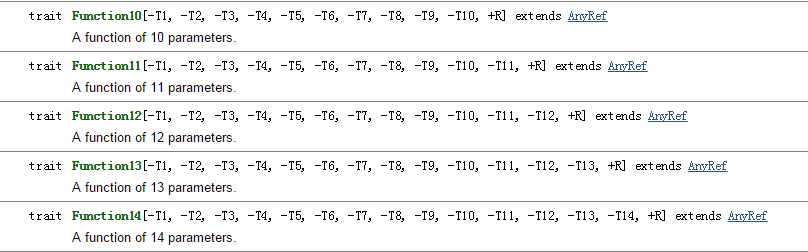
上図のFunction10が表すのは、10個の仮引数を持ち、戻り値がR（共変）である関数です。
Scalaの関数は実際にはこれらのトレイトを継承したクラスのオブジェクトです。例えば、関数リテラルを使って関数を定義します。
実際、上記の関数の定義方法は以下の定義方法と同等です：
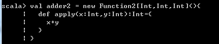
Function2はトレイトであるため、直接newすることはできません。上記のnew Function2[Int,Int,Int](){}実は、Function2 トレイトを実装したクラスのオブジェクトを定義し、インスタンス化している。
apply は scala の構文糖（シンタックスシュガー）である：オブジェクト obj に対して obj() を呼び出すと、scala コンパイラは obj.apply() に変換する；クラス clazz に対して clazz() を呼び出すと、scala コンパイラは clazz_company_obj.apply() に変換する。ここで clazz_company_obj は clazz のコンパニオンオブジェクトである。
具体的な違いは、次のようにまとめられる。
1. メソッドは単独の式として存在することはできません（引数が空のメソッドは除きます）。一方、関数はできます。例：
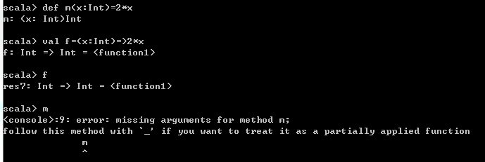
上記の例では、まずメソッドmを定義し、次に関数fを定義しました。そして、関数名（関数値）を最終式として使用します。f自体が
オブジェクト（FunctionNトレイトを実装したオブジェクト）であるため、この使用方法は完全に正しいです。しかし、メソッド名を最終式として使用すると、エラーになります。
2. 関数にはパラメータリストが必須ですが、メソッドにはパラメータリストがなくても構いません。
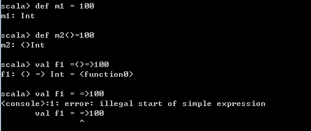
上記の例では、m1メソッドはゼロ個の引数を受け取るため、パラメータリストを省略できます。しかし、関数はパラメータリストを省略できません。
3. メソッド名はメソッド呼び出しを意味しますが、関数名は関数オブジェクトそのものを表すだけです。
これは理解しやすいです。関数リテラルを保存する変数（関数名または関数値とも呼ばれます）自体がFunctionNトレイトを実装したクラスのオブジェクトであり、オブジェクトのapplyメソッドを呼び出すにはobj()という構文を使用する必要があるからです。したがって、関数名の後に括弧を付けて初めて関数を呼び出すことになります。以下の通りです：
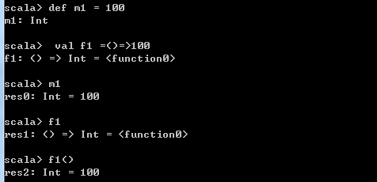
4. 関数が必要な場所にメソッドを渡すと、自動的にETA展開（メソッドを関数に変換すること）が行われます。
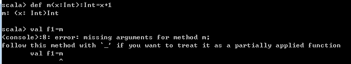
メソッドを直接変数に代入しようとするとエラーになります。変数の型を関数として指定すれば、コンパイルが通ります。以下の通りです：
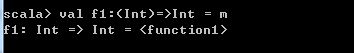
もちろん、メソッドを強制的に関数に変換することもできます。その際にはScalaの部分適用関数を使用します：
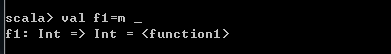
5. 名前渡しパラメータは本質的にメソッドである
名前渡しパラメータは、実質的にパラメータリストが空のメソッドです。以下の通りです：
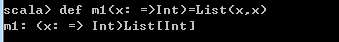
上記のコードは実際にはメソッドm1を定義しており、m1のパラメータは名前渡しパラメータ（メソッド）です。パラメータが空のメソッドの場合、メソッド名がメソッド呼び出しになるため 、List(x,x)は実際には2回のメソッド呼び出しを行っています。
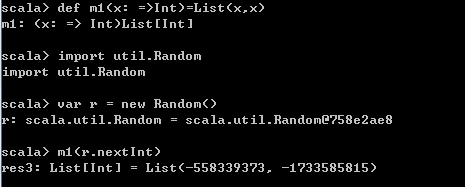
由于List(x,x)2回のメソッド呼び出しが行われるため、2つの異なる値が得られます。
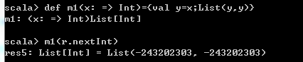
関数m1の定義を少し変更して、xを先にキャッシュしておくと、結果は以前と大きく異なる。
原文：https://blog.csdn.net/u012302488/article/details/50543661